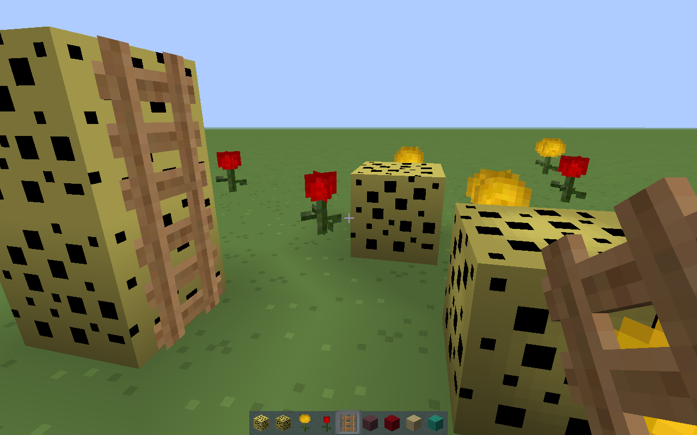

Textura CrazzyMCPE
Minecraft(Java)


Presentando la versión de CrazzyMCPE texturepack para Minecraft(Java).
esta futura versión será una versión beta de esta textura que ya estaba en beta antes en Minecraft(Pocket).
Esta será una actualización para la versión de Minecraft(Pocket) y será una beta para Minecraft(Java).